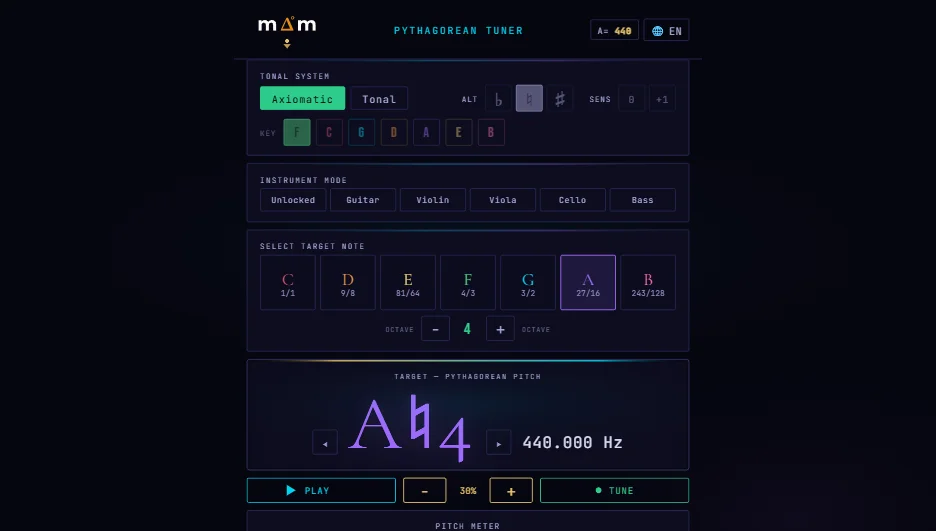
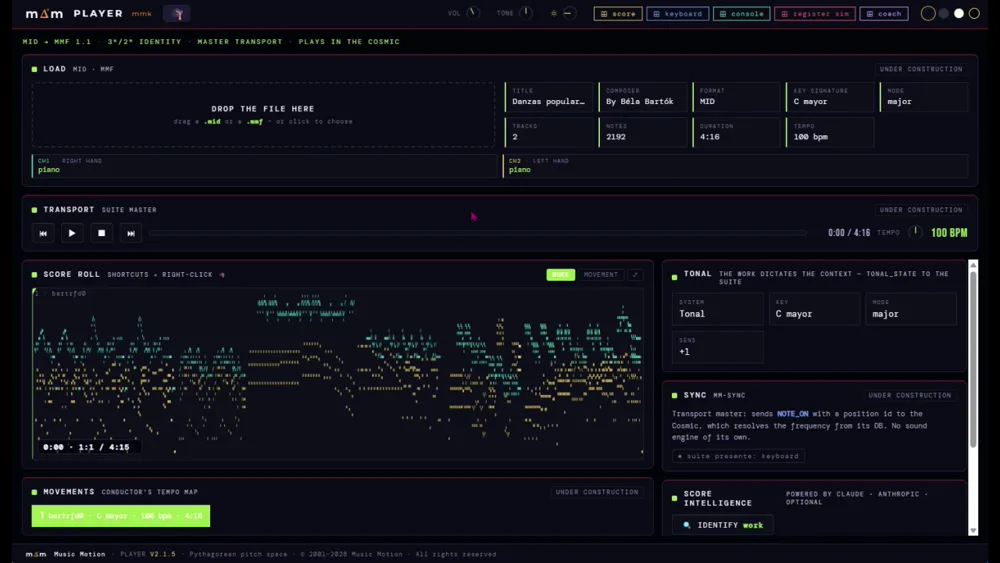

Ce que l’oreille chante, la formule l’écrit.
Ouvrez, jouez et écoutez. Cela fonctionne dans le navigateur de votre ordinateur, de votre tablette ou de votre téléphone : rien à installer, rien à apprendre d’abord.
Si vous savez lire la musique, vous savez déjà l’utiliser. Le clavier de votre ordinateur est l’instrument.
Que souhaitez-vous faire ?
Choisissez une porte. Chacune ouvre directement ce dont vous avez besoin ; le reste, vous le découvrirez ensuite, à votre rythme.
Accorder mon instrument
L’accordeur affiche chaque note avec son vrai nom : Do♯ n’est pas Ré♭. Il utilise le microphone, sur l’ordinateur ou sur le téléphone.
Jouer et écouter
Votre clavier devient un instrument accordé à l’oreille, avec plus de soixante sons : du piano au violon, de l’orgue à la voix.
S’exercer avec accompagnement
Chantez ou jouez votre partie avec le piano qui sonne. Changez la tonalité ou l’instrument, et enregistrez-vous pour vous réécouter. Pour les chanteurs et les instrumentistes.
Enseigner
Écrivez vos exercices dans une partition qui sonne et partagez-les avec vos élèves. Pour les académies et les écoles : 1 € par élève tous les 30 jours.
Un dièse n’est pas un bémol
Ré♯ et Mi♭ sont deux hauteurs différentes, et ici elles sonnent différemment : dans l’accordeur, sur le clavier et dans la partition. Tout Music Motion repose sur l’accord pythagoricien : des octaves et des quintes pures, sans les arrondis du tempérament, et l’oreille comme juge.
On apprend par immersion progressive : l’accord, l’écriture, l’interprétation, l’accompagnement et l’orchestration, pas à pas, au rythme de celui qui apprend ou de celui qui enseigne.
Deux outils, un seul accord
Ce que vous accordez dans l’un sonne de la même façon dans l’autre : sous les deux se trouve la même table de hauteurs, écrite en rapports exacts.
L’accordeur

Le premier accordeur non tempéré, sur votre ordinateur ou votre téléphone — vous pouvez le télécharger, offert par Music Motion.
Le seul accordeur qui affiche la véritable orthographe musicale : Do♯ ≠ Ré♭. Intonation pythagoricienne pure, avec dièses, bémols, doubles altérations et position tonale. Pour guitare, violon, alto, violoncelle et contrebasse, et un mode libre pour tout instrument.
- Indicateur ♭♭ ♭ ● ♯ ♯♯ : la note avec son nom exact, pas la plus proche
- La4 = 440 Hz, réglable (415 · 430 · 432 · 440 · 442 · 466)
- Depuis le microphone, traité sur votre appareil : rien n’est enregistré ni envoyé. Rien à installer.
La suite
Six applications de navigateur qui dialoguent en temps réel : un moteur sonore pythagoricien, un éditeur de partitions qui joue par degrés, une console de mixage, un banc de timbres, un copiste MIDI et un coach qui enseigne la composition sans théorie préalable.




- Plus de soixante instruments, tous pythagoriciens — le piano compris
- Guide d’utilisation, raccourcis et bibliothèque d’instruments, en espagnol, anglais, français, néerlandais et allemand
- Son propre format, MMF — l’œuvre avec son accord exact et son interprétation à l’intérieur —, avec trois œuvres à télécharger et à ouvrir
Jouez tout de suite : le clavier de votre ordinateur est l’instrument. Voir les raccourcis →
Ce que vous pouvez télécharger, et ce qui arrive
Les outils vivent dans le navigateur et ne demandent aucune installation. Ce qui sera téléchargeable, c’est le paquet de bureau ScoreSuite — les six applications, leur lanceur local, le manuel et le guide —, en préparation : il sortira quand la suite sera terminée, ce sera une licence payante unique, et d’ici là il existe une liste d’attente.